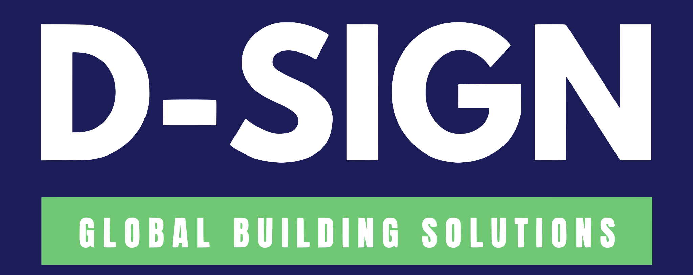

Trois nouvelles façons de présenter D-SIGN.
Le même logo, la même offre, les mêmes projets. Trois compositions pour choisir comment l’entreprise se présente et comment ses clients entrent dans le projet.
Comparaison du premier écran et des premiers modules, pas de la homepage finale. Le logo officiel est conservé intégralement. Les deux visuels communs sont des rendus publiés sur le site actuel ; leurs missions, lieux et états d’avancement restent à confirmer. Les CTA de ces aperçus mènent aux coordonnées, sans formulaire connecté.

Galerie des lieux
Une présence architecturale, calme et expressive. Elle met les lieux en valeur, mais demande de vraies photos pour atteindre toute sa force.

Décrire mon projetRénovation, extension, construction : de la conception au chantier.

D-SIGN accompagne les particuliers et les professionnels en courtage en construction et maîtrise d’œuvre : plans, chiffrage et coordination des travaux, selon la mission convenue.
Décrire mon projetDécouvrir les projetsImplantée à Boves.

Rénover
Repenser un espace existant et préparer sa transformation.
Agrandir
Étudier une extension et son articulation avec l’existant.
Construire
Définir le projet, ses plans et les étapes de sa réalisation.
Décrivez le projet que vous souhaitez concrétiser.
D-SIGN GBS · 5 rue des Indes Noires, 80440 Boves
Palette et typographie
Gloock pour les titres, Instrument Sans pour la lecture. Charbon, pierre et terre claire.
Principe de composition
Une grande vue, des légendes de galerie et un second projet en contrepoint. Le logo reste une pièce entière.
Le compromis
La plus atmosphérique. À retenir si les projets doivent être le premier souvenir de la page.
Deux usages, une entreprise
La double cible se comprend immédiatement. C’est la plus accessible, avec une expression moins théâtrale.
Rénovation, extension, construction : de la conception au chantier.
D-SIGN accompagne les particuliers et les professionnels en courtage en construction et maîtrise d’œuvre : plans, chiffrage et coordination des travaux, selon la mission convenue.
Décrire mon projetParticuliers
Pour votre logement.
Professionnels
Pour vos locaux et bâtiments.
Implantée à Boves.
Découvrir les projetsRénover
Repenser un espace existant et préparer sa transformation.
Agrandir
Étudier une extension et son articulation avec l’existant.
Construire
Définir le projet, ses plans et les étapes de sa réalisation.
Décrivez le projet que vous souhaitez concrétiser.
D-SIGN GBS · 5 rue des Indes Noires, 80440 Boves
Palette et typographie
Bricolage Grotesque et Instrument Sans. Blanc cassé, encre et vert profond, autour du logo intact.
Principe de composition
Un message commun, deux images de même poids et une ligne de services simple. Aucun sélecteur ne bloque la lecture.
Le compromis
La plus familière. À retenir si la priorité est de faire reconnaître son besoin en quelques secondes.
Édition de chantier
Une identité imprimée, directe et mémorable. Elle assume davantage de caractère et doit conserver sa lisibilité dans la durée.
Rénovation, extension, construction : de la conception au chantier.
D-SIGN accompagne les particuliers et les professionnels en courtage en construction et maîtrise d’œuvre : plans, chiffrage et coordination des travaux, selon la mission convenue.
Décrire mon projetImplantée à Boves.
Concevoir. Chiffrer. Coordonner.
Découvrir les projetsRénover
Repenser un espace existant et préparer sa transformation.
Agrandir
Étudier une extension et son articulation avec l’existant.
Construire
Définir le projet, ses plans et les étapes de sa réalisation.
Décrivez le projet que vous souhaitez concrétiser.
D-SIGN GBS · 5 rue des Indes Noires, 80440 Boves
Palette et typographie
Big Shoulders pour l’impact, Instrument Sans pour l’information. Papier, bleu d’encre et rose imprimé.
Principe de composition
Les trois services construisent la page. Titres structurants, aplats francs et images organisées comme une publication.
Le compromis
La plus affirmée. À retenir si D-SIGN veut une expression graphique qui dépasse les codes habituels du secteur.
Choisir sur ce qui doit convaincre.
Chaque piste peut porter les services, les projets et la future prise de contact. Le choix porte sur le système entier, pas seulement sur une couleur.
Une page à regarder, avec une présence plus architecturale et une place forte pour les projets.
Les particuliers et les professionnels se reconnaissent immédiatement, dans un cadre clair et accueillant.
Une marque plus affirmée, dont les services deviennent le principe de composition.